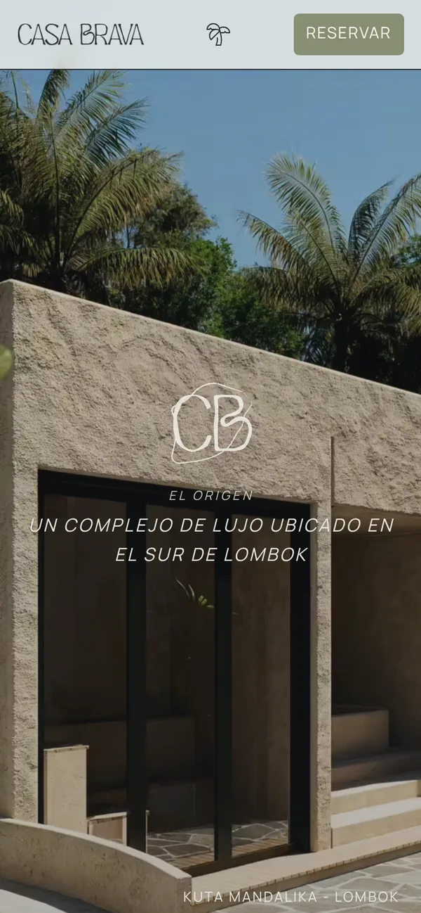

Casa Brava
An editorial website for a retreat of villas and suites in Kuta Mandalika, Lombok. It reads like an architecture magazine rather than a booking catalogue, and guests book by email, phone or WhatsApp.
Web editorial para un complejo de villas y suites en Kuta Mandalika. Pensada como una revista de arquitectura más que como un catálogo de reservas: las reservas se derivan a correo, teléfono y WhatsApp.
Eine Website im Magazin-Stil für eine Anlage mit Villen und Suiten in Kuta Mandalika auf Lombok. Sie liest sich eher wie ein Architekturmagazin als wie ein Buchungsportal; gebucht wird per E-Mail, Telefon oder WhatsApp.

Highlights Lo más destacado Highlights
- 5 pages in semantic HTML5, CSS3 and vanilla JavaScript páginas con HTML5 semántico, CSS3 y JavaScript vanilla Seiten mit semantischem HTML5, CSS3 und Vanilla-JavaScript
- WCAG AA accessibility, with technical SEO and performance built in de accesibilidad, con SEO técnico y Core Web Vitals Barrierefreiheit, dazu technisches SEO und optimierte Ladezeiten
- Mobile first with a clean, scalable CSS architecture (SUIT CSS) con una arquitectura CSS ordenada en SUIT CSS mit einer sauberen, skalierbaren CSS-Architektur (SUIT CSS)
- GSAP scroll animations that never hide content, even if the script fails to load en animaciones de scroll que nunca ocultan el contenido Scroll-Animationen, die keine Inhalte verbergen – auch wenn das Skript nicht lädt
Built with Hecha con Umgesetzt mit HTML5 · CSS3 · JavaScript · SUIT CSS · GSAP · GitHub Pages